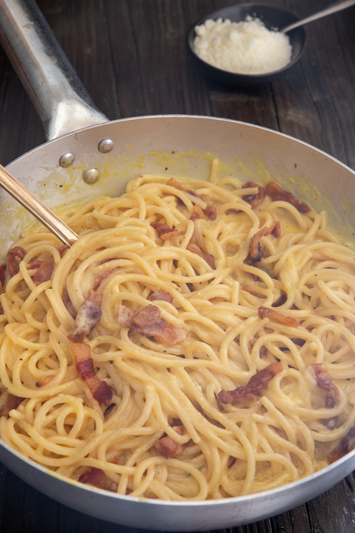

An authentic spaghetti carbonara is a Roman pasta dish made with just a few high-quality ingredients: pasta, eggs, Pecorino Romano cheese, guanciale (cured pork cheek), and black pepper. No cream, garlic, or onions—those are modern variations and not part of the traditional recipe.

Authentic Spaghetti Carbonara
Ingredients
600 g cooked spaghetti
4 large egg yolks
100 g pecorino freshly grated
1/2 teaspoon black pepper (freshly ground)
2 tablespoons olive oil
100-150 g guanciale
Directions
In a large pot boil the water, once the water is at a roaring boil add a little salt and the spaghetti, stir and cook until a little bit more than al dente.
In a small/medium bowl beat until well combined the egg yolks, add the grated pecorino and pepper, beat to combine. Just before adding to the pan add 1/3 - 1/2 cup (80-120ml) of hot pasta water and mix to combine well.
Slice the guanciale into short thin strips. In a large pan add the olive oil and guanciale, cook on medium heat until desired doneness. Remove the guanciale to a clean plate. Do not remove the oil (& fat) from the pan.
On medium/high heat, add the al dente pasta to the pan, and a ⅓-½ cup (80-120 ml) of hot pasta water and stir to combine, remove the pan from the heat and add the egg mixture and quickly combine, add 1/3 - 1/2 cup of hot (not boiling) pasta water and toss continually until well combined and creamy. Add the guanciale and gently mix. Serve immediately topped with freshly grated pecorino and black pepper. Enjoy!